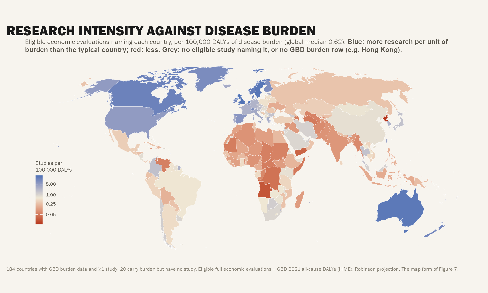
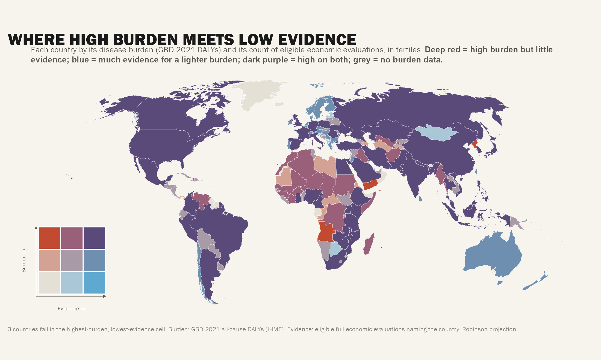
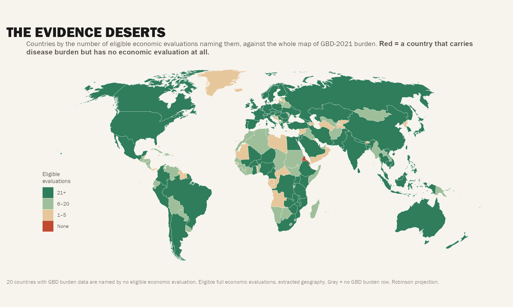
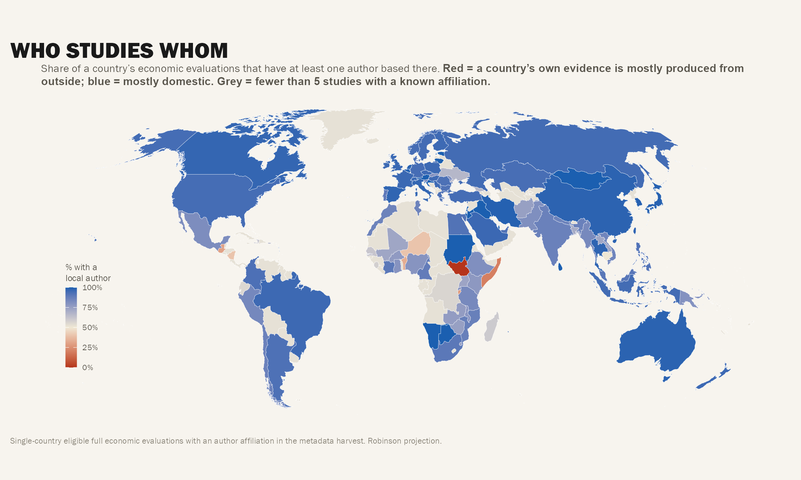
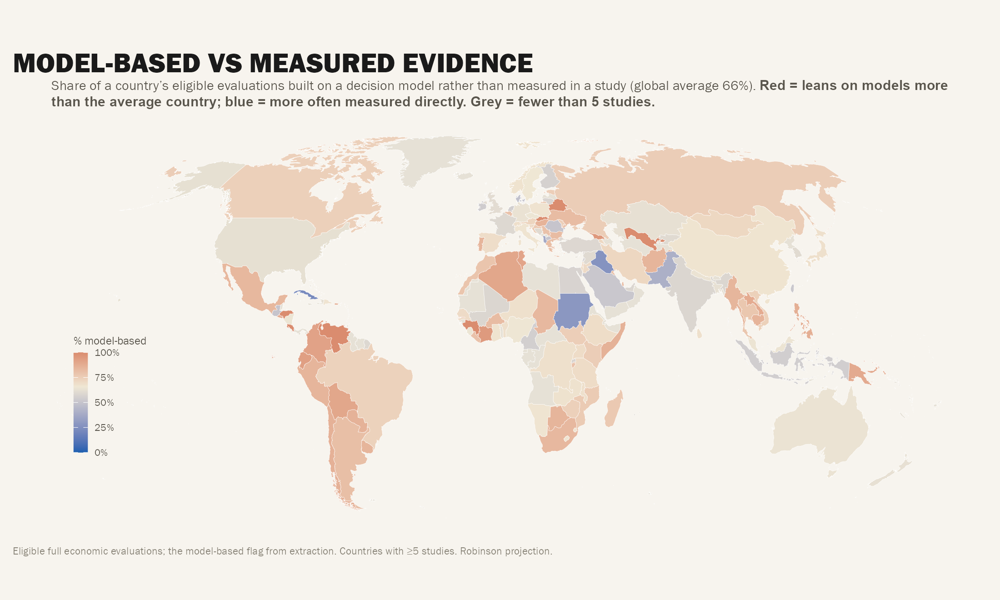
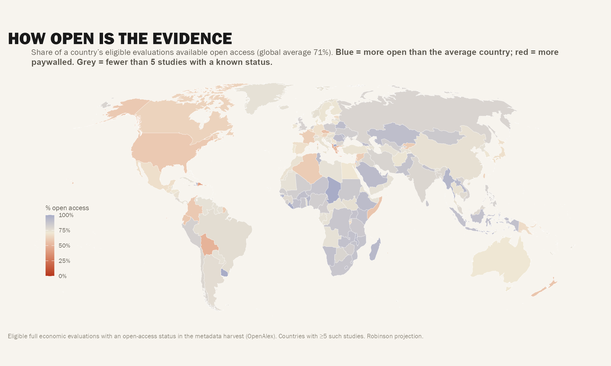
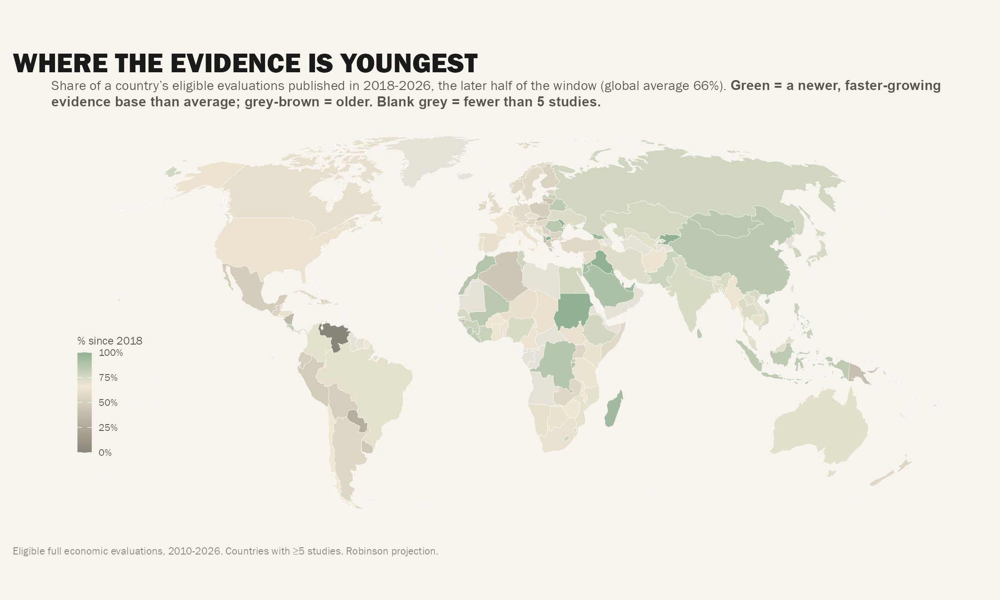
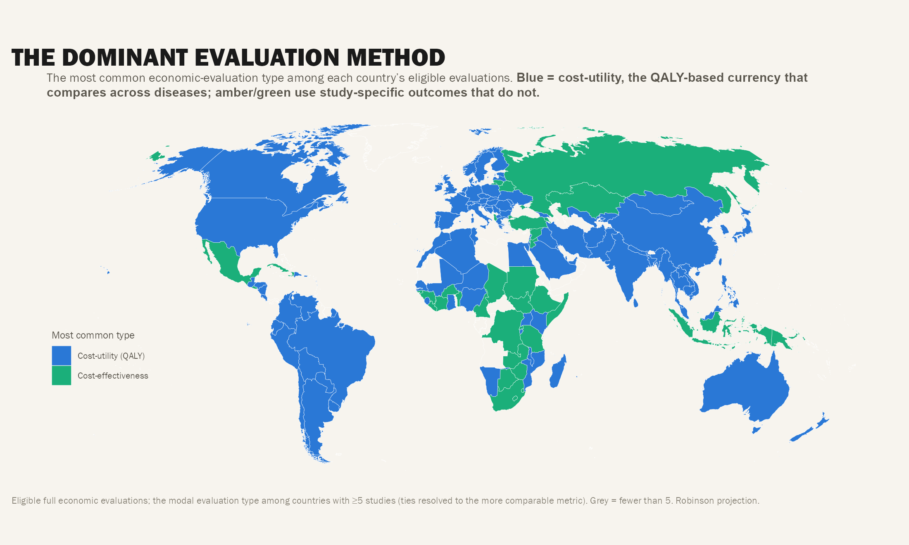
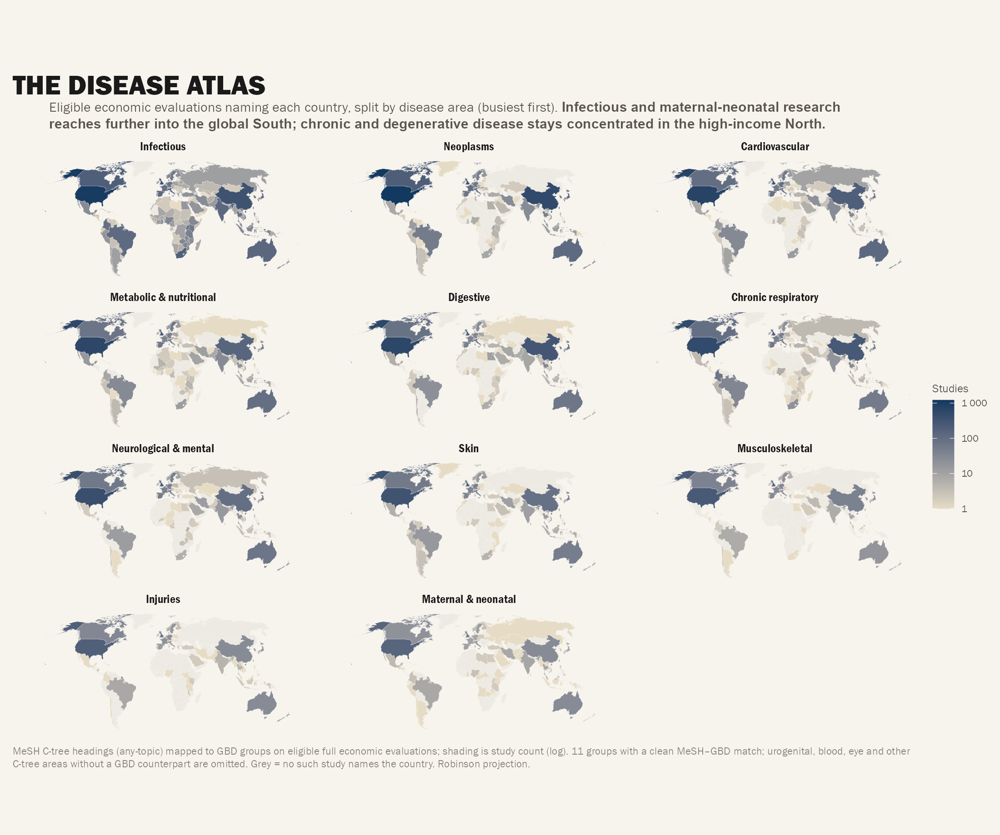

Map Atlas (M1–M9)
Map Atlas (M1–M9)
A cartographic collection sharing R/map-base.R (eligible-only counts, World Bank population, GBD 2023 burden, extracted geography, Robinson projection — discipline set by 2026-09-07 audit).
Discipline notes: Share maps (M4–M8) show only countries with ≥5 studies (grey below); M1–M3 include every country with a GBD burden row so blanks are visible; M2’s dark-purple corner = high-on-both (big countries), not missing data; M9 shades absolute counts (log) — disease contrast is the point.

M1 — Research Intensity vs Burden
Studies per 100,000 DALYs per country, diverging around global median. Map form of Figure 7.
Blue = more research per burden than typical; red = less. Grey = no eligible study or no GBD row. 20 countries carry burden but have zero studies.

M2 — Burden × Evidence Bivariate
Bivariate choropleth: high-burden/low-evidence lights up. Two-dimensional gap map.
Dark purple = high burden + high evidence (big countries); red = high burden + low evidence (the gap); blue = low burden + high evidence. Visualizes the joint distribution.

M3 — Evidence Deserts
0 / 1–5 / 6–20 / 21+ studies. 20 countries with burden but zero eligible studies.
The starkest map: countries with real disease burden but zero economic evaluations. Immediate priority list for evidence generation.

M4 — Who Studies Whom (Local Authorship Share)
Share of studies with a local author. Parachute research visible on the map. Countries with ≥5 studies only.
Low local-authorship share = parachute research. Maps the C18 finding geographically.

M5 — Model-Based vs Measured
Model-based share by country. LMIC lean on models. Countries with ≥5 studies only.
LMIC countries show higher model-dependency — consistent with C12/T4. Model-based evidence dominates where primary data is scarce.

M6 — Open Access by Country
OA share by country. Countries with ≥5 studies only.
Geographic view of C25: LMIC countries tend to have higher OA shares. Reachability mirrors evidence production patterns.

M7 — Where Evidence Is Youngest
Share of studies since 2018 by country. Countries with ≥5 studies only.
Recent growth concentrated in specific regions — shows where the field is expanding geographically.

M8 — Dominant Evaluation Method
Cost-utility North / cost-effectiveness South. Countries with ≥5 studies only.
Geographic manifestation of C11/C8: HIC = CUA (QALY), LMIC = CEA (natural units). The metric divide is spatial.

M9 — Disease Atlas (11 Small Multiples)
11 small-multiple maps, one per GBD Level-1 cause group. Shades absolute study counts (log). Disease contrast is the point, not absolute peak.
Infectious diseases light up Africa/South Asia; NCDs light up HIC regions; injuries diffuse. The spatial disease signature of HEE research.
Atlas Summary
| Map | Focus | Key Insight |
|---|---|---|
| M1 | Intensity vs burden | 20 countries: burden but zero studies |
| M2 | Bivariate gap | High-burden/low-evidence = red (the gap) |
| M3 | Deserts | Categorical: 0, 1–5, 6–20, 21+ |
| M4 | Local authorship | Parachute research geography |
| M5 | Model-dependency | LMIC lean on models |
| M6 | Open access | LMIC research more open |
| M7 | Recency | Where growth is happening |
| M8 | Dominant method | CUA North / CEA South |
| M9 | Disease atlas | 11 small multiples, disease contrast |
Previous: ← Timelines • Next: Lancet Paper Figures →